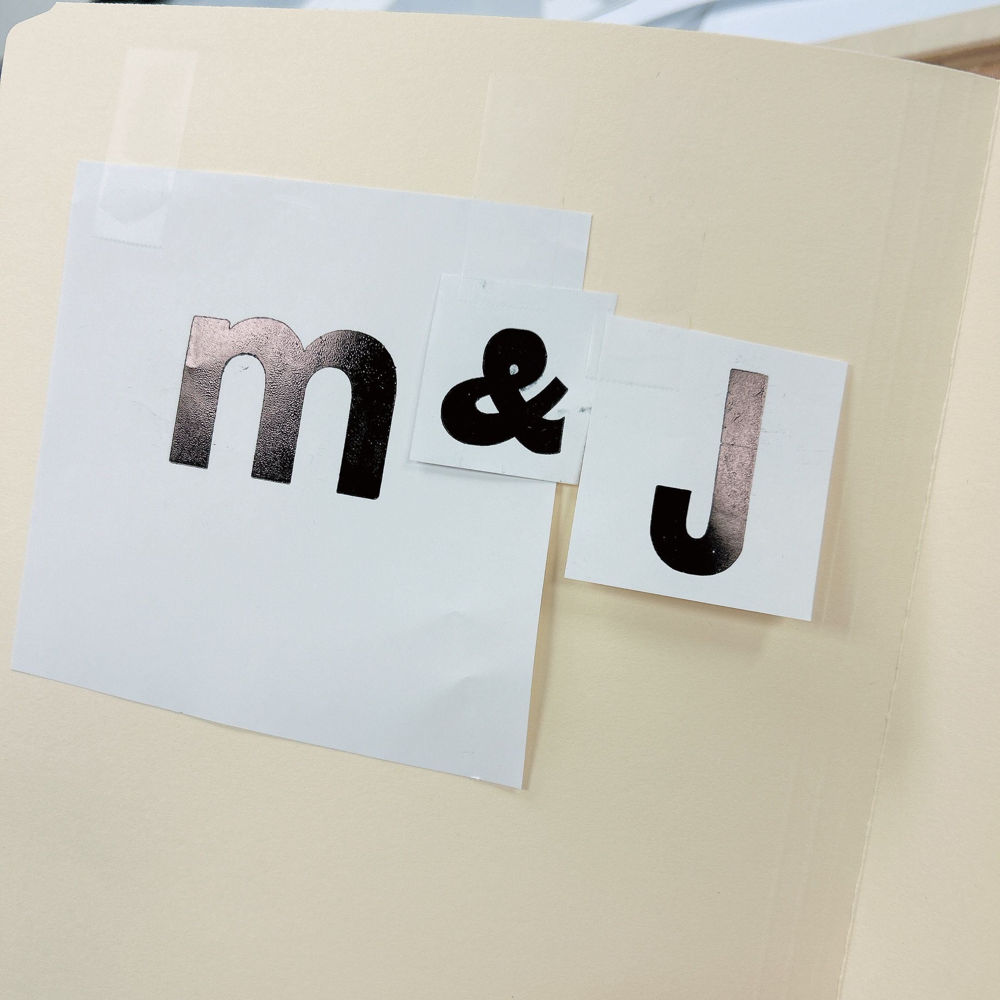

about.
stuck in code; lost in translation;
found in design.
Working across Chinese, English, and Japanese taught me that meaning depends on context and cannot always be translated literally. That experience drew me to the tension between structure and interpretation. Programming gave me the other side of it: a way to think systematically and find the logic beneath things.
What interests me most is what happens when an idea moves from one system into another. Rather than presenting a single answer, I want my work to reveal overlooked perspectives and invite people to see familiar things differently. In my design process, I bring both ways of thinking together. I build structures to make sense of what I observe, then look again to see where those structures fall short or where meaning begins to shift.
English (Advanced)
Japanese (Advanced)
LinkedIn · Instagram
